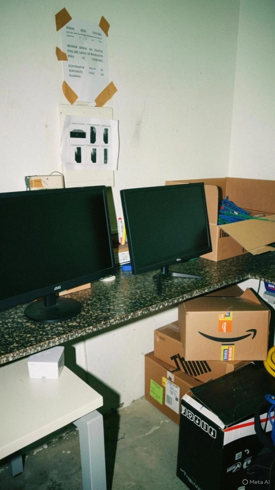
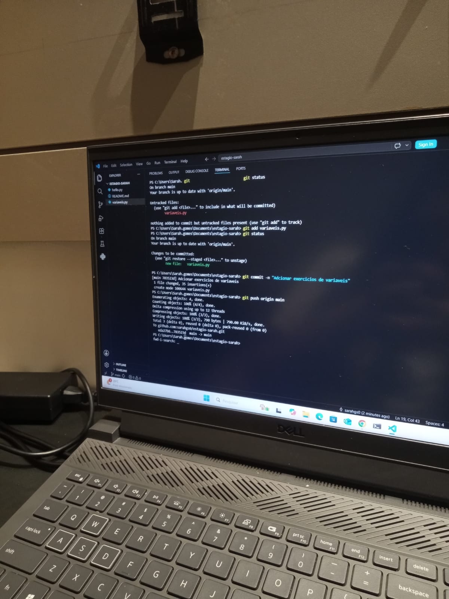

Experience & Internships
IT Support Intern — Civil Police of Ceará
Polícia Civil do Estado do Ceará, Brazil
During my internship with the Civil Police of Ceará, I gained hands-on experience in technical support and IT maintenance. I assisted with diagnosing computer and printer issues, troubleshooting software and system problems, preparing equipment, and managing technical inventory. Working alongside a technical team that supported police units across Ceará helped me understand how technology infrastructure is maintained in a large public institution.
Areas of experience: Computer and printer maintenance, hardware troubleshooting, software and system support, equipment preparation, and technical inventory.

Software Development Intern
During my software development internship, I have been strengthening my programming skills through practical assignments and hands-on projects. My work involves Python, SQL, Git, API integration, structured data processing, and software troubleshooting. I have also been learning about application development, including Flask and Supabase, while developing a stronger understanding of professional software development workflows.
Areas of experience: REST API integration, JSON and CSV processing, debugging, and practice with development workflows.
